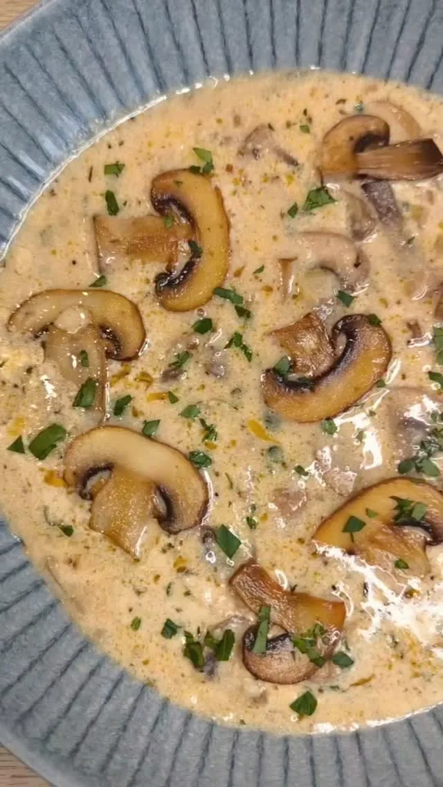

Cremige Champignon-Suppe
Ein Löffel und du bist verliebt! Herrlich cremig, voller Aroma und mit einer feinen Parmesan-Note – und das Ganze steht in weniger als 30 Minuten auf dem Tisch. Ob als wärmendes Mittagessen, schnelles Abendessen oder zusammen mit frischem, knusprigem Brot: Diese Suppe geht einfach immer
- 3–4 Portionen
- ca. 30 Min.
- 12 Zutaten
- 6 Schritte
Zur Zubereitung Video ansehen ↗
Zutaten
Zubereitung
- Die Champignons in Scheiben schneiden und in einer Pfanne kräftig anbraten, bis sie eine schöne goldbraune Farbe bekommen.
- Butter hinzufügen, anschließend die fein gewürfelte Zwiebel und den gehackten Knoblauch darin glasig dünsten.
- Alles mit Salz, Pfeffer, Paprikapulver und Thymian abschmecken.
- Das Mehl einrühren und kurz anschwitzen. Danach nach und nach Hühnerbrühe und Sahne dazugeben und gut verrühren.
- Den Parmesan unterheben und die Suppe einige Minuten sanft köcheln lassen, bis sie wunderbar cremig ist.
- Mit frisch gehackter Petersilie garnieren und heiß servieren.